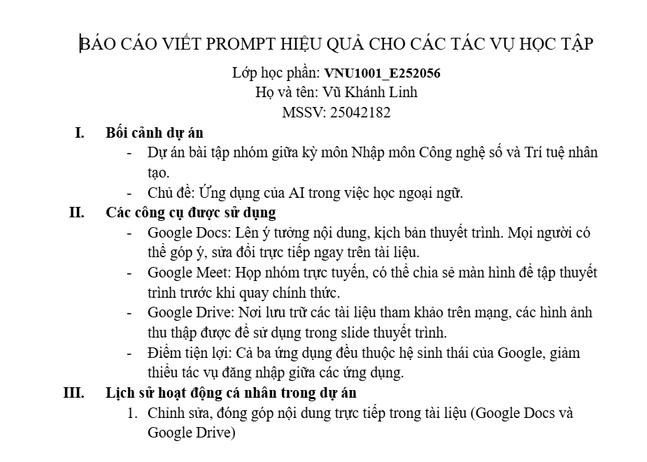
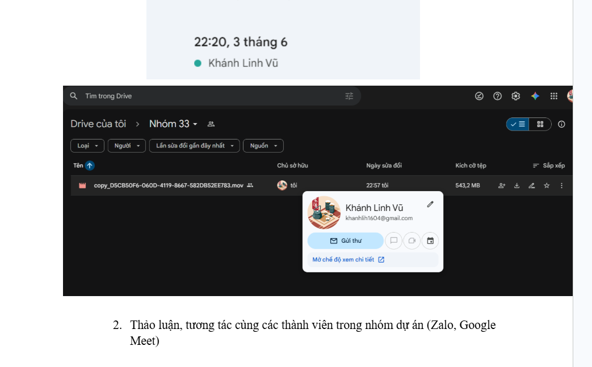

Sử dụng thành thạo các công cụ trực tuyến để phối hợp hiệu quả trong một dự án nhóm.
Trong bài tập này, nhóm của mình đã cùng nhau xây dựng một quy trình làm việc trực tuyến khép kín, kết hợp nhiều công cụ như Google Docs, Google Sheets, Google Drive cùng các kênh liên lạc như Zalo và Google Meet.
Mình đảm nhận vai trò hỗ trợ quản lý tiến độ chung, cùng các thành viên phân chia đầu việc rõ ràng, đặt deadline cụ thể và thường xuyên cập nhật tình hình để tránh chồng chéo công việc.
Kinh nghiệm lớn nhất mình rút ra được là sự minh bạch trong giao tiếp và một không gian lưu trữ chung có tổ chức chính là chìa khóa giúp một dự án nhóm vận hành trơn tru.

